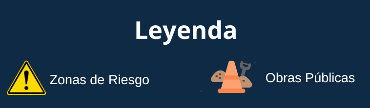
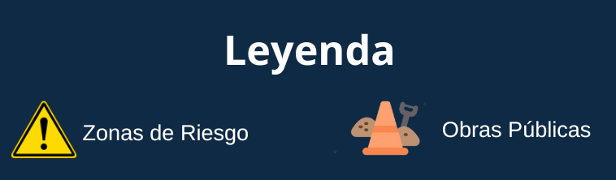

¡BIENVENIDO al espacio ciudadano dedicado al seguimiento
de obras y riesgos por el Fenómeno del Niño Costero. Expresa tu opinión
con 'Me gusta' o 'No me gusta'. Explora detalles de obras y zonas de riesgo con un
simple clic. Tu participación es clave para prevenir la corrupción.
¡Contamos contigo para construir un entorno más transparente y seguro!

¡Tu participación es esencial para crear un entorno más seguro y transparente!
👍 Like
👎 Dislike

¡Tu participación es esencial para crear un entorno más seguro y transparente!
👍 Like
👎 Dislike